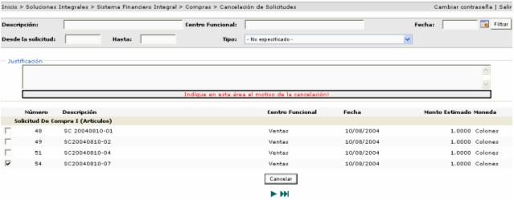

Este proceso permite cancelar solicitudes que han sido aprobadas. La cancelación de la solicitud de materiales implica que las mismas no serán abastecidas como parte del proceso de compra de la empresa. Además este proceso incluye la liberación del presupuesto que se reservo con anterioridad para dicha solicitud.
Las solicitudes de compra que se pueden cancelar, son aquellas que están aplicadas y están en un proceso de compra NO PUBLICADO.
Se debe de justificar
el motivo de la cancelación de dicha solicitud. Se selecciona (n) la (s)
solicitud (es) y se presiona el botón .
.
